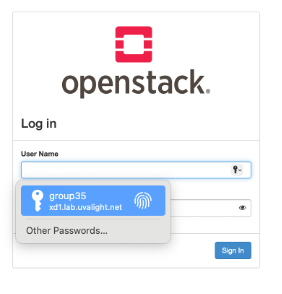
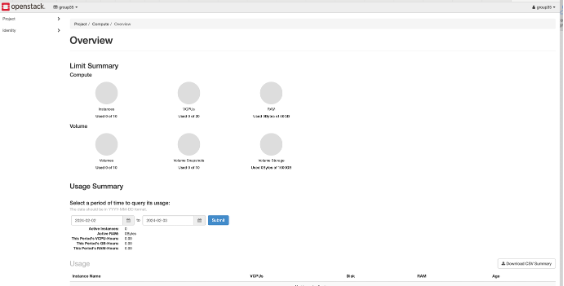
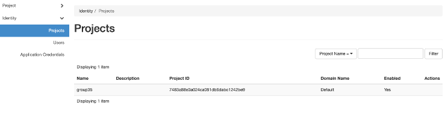
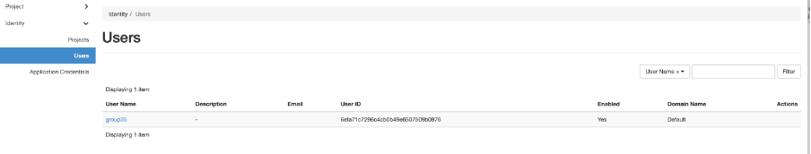
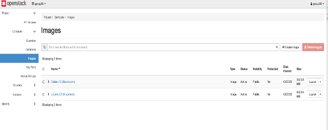

Participant Guide
Tutorial 2: Cloud Platform / OpenStack
This tutorial serves as a gentle introduction to cloud platforms as covered in the lecture. The primary goal is to learn how to use an Open Source Cloud Platform (OpenStack).
The main focus of this assignment is to teach you how to use the OpenStack Web Interface (Horizon) and the OpenStack CLI to manage the lifecycle of Virtual Machines (VMs).
Note: In this tutorial, you will be given an account with limited privileges. It is not possible to perform advanced administrative tasks such as creating new projects, users, networks, or security groups.
Objectives of this Assignment
- Get introductory hands-on experience with an Open Source Function as a Service platform (OpenStack).
Learning Outcomes
- Learn how to interact with a pre-installed OpenStack environment using Horizon and the CLI.
Prerequisites
- Access to a pre-installed OpenStack instance.
Table of Contents
- Step 1: OpenStack Web Interface (Horizon)
- Step 2: OpenStack Command Line Interface (CLI)
- Submission & Grading
Step 1: OpenStack Web Interface (Horizon)
1. Login to OpenStack Web Interface
- URL: https://xd1.lab.uvalight.net/horizon/
- Login with your provided credentials.

- Upon logging in, you will see a summary page. The menu on the left will adjust based on your account roles.

2. Create a Project (Not covered)
You will see only one project named groupXX already created for you.

3. Create a User (Not covered)
Administrative users can create users via Identity > Users.

- Resource: Video: Create OpenStack User (15:42)
4. Create a Network/Router (Not covered)
Administrative users can create networks via Identity > Networks.
5. Create an Image (Not covered)
View existing images via Project > Compute > Images. You can use existing images or upload a virtual image file using the "Create Image" menu.

6. Security / Modify Group (TODO)
To SSH into your VM from a remote client, you must modify the security group to allow SSH traffic.
- Resource: Video: Create a Security Group (26:17)
7. Create/Start an Image Instance (TODO)
Launch an instance of the image and SSH into it from a remote machine.
- Resource: Video: Create Instance (31:26)
Step 2: OpenStack Command Line Interface (CLI)
1. Installing OpenStack Client (TODO)
Before installing the client, create configuration files to handle authentication.
Configuration Files
Create the directory:
$ mkdir -p ~/.config/openstack
Example: ~/.config/openstack/clouds.yaml
YAML
clouds:
openstack:
auth:
auth_url: [https://xd1.lab.uvalight.net/keystone/v3/](https://xd1.lab.uvalight.net/keystone/v3/)
username: "your-username"
project_id: <your-project-ID>
project_name: "your-project-name"
user_domain_name: "Default"
region_name: "RegionOne"
interface: "public"
identity_api_version: 3
Example: openstackrc (Environment Variables)
Bash
export OS_USERNAME="username"
export OS_PASSWORD="passwd"
export OS_PROJECT_NAME="project-name"
export OS_USER_DOMAIN_NAME="Default"
export OS_PROJECT_DOMAIN_NAME="Default"
export OS_AUTH_URL="[https://xd1.lab.uvalight.net/keystone/v3/](https://xd1.lab.uvalight.net/keystone/v3/)"
export OS_IDENTITY_API_VERSION=3
export OS_REGION_NAME="RegionOne"
Installation
Bash
# Update pip (Optional)
$ pip install pip --upgrade
# Install the client
$ pip install python-openstackclient
Authentication
If you are not using an openrc file, you must provide credentials manually:
Bash
$ openstack --os-username YOUR_USERNAME \
--os-password YOUR_PASSWORD \
--os-project-name YOUR_PROJECT_NAME \
--os-region-name YOUR_REGION_NAME \
--os-user-domain-name YOUR_USER_DOMAIN_NAME \
--os-project-domain-name YOUR_PROJECT_DOMAIN_NAME \
COMMAND
OpenStack Commands (TODO)
There are two ways to use the CLI:
Interactive Shell:
Bash
$ openstack
(openstack) server list
Direct Commands:
Bash
$ openstack server list
$ openstack --os-cloud openstack server list
Help Commands:
Bash
$ openstack help
$ openstack help <command>